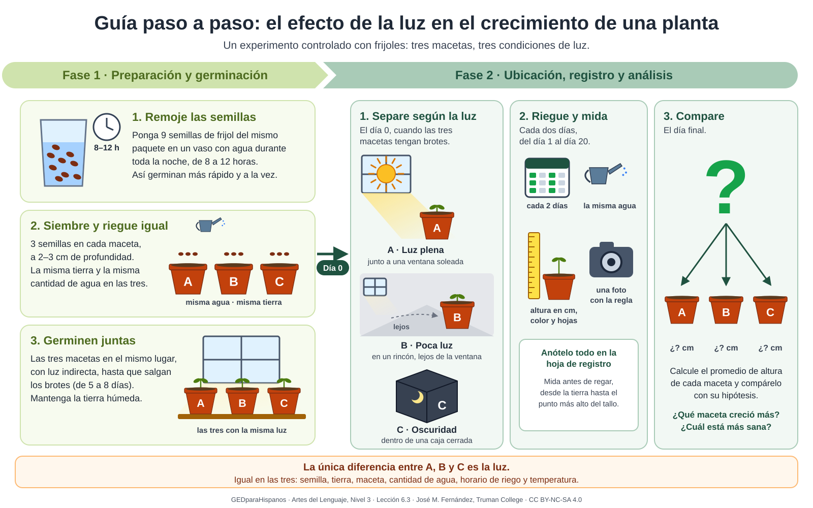

Artes del Lenguaje · Nivel 3 · Tema 6: Leer en las materias: datos, procedimientos y multimedia · Unas 2 horas, a tu ritmo
Estándares: RST.6-8.3 · RST.6-8.5 · RST.6-8.7 · RST.6-8.9
Una receta, las instrucciones para armar un mueble, la forma de tomar un medicamento, un experimento de ciencias: todos son procedimientos. Si te saltas un paso o cambias el orden, el resultado sale mal. En el examen de Ciencias del GED hay preguntas sobre experimentos: qué se hizo primero, qué se mide, qué se mantiene igual. En esta lección vas a leer un experimento real, uno que tu maestro hizo con tres macetas de frijol, y lo vas a ver en texto, en infografía y en video.
Tu navegador no tiene una voz en español disponible, así que los botones 🔊 no sonarán.
Los textos de procedimiento tienen una estructura muy reconocible. Cada parte responde una pregunta:
| Parte | Responde a… | Cómo se reconoce |
|---|---|---|
| Pregunta o propósito | ¿Qué queremos averiguar? | Va al principio, muchas veces en forma de pregunta. |
| Materiales | ¿Qué necesito? | Una lista con cantidades exactas. |
| Pasos | ¿Qué hago y en qué orden? | Números, verbos en imperativo (remoje, siembre, mida) y marcas de tiempo (la noche antes, el día 0, cada dos días). |
| Medidas | ¿Cuánto? ¿Cuándo? ¿Cómo? | Cifras con unidad: 60 ml, 2 a 3 cm, de 8 a 12 horas. |
| Advertencias y notas | ¿Qué puede salir mal? | Recuadros con ⚠️ o 💡, o palabras como ojo, importante, si… |
Un experimento controlado cambia una sola cosa a la vez para saber qué efecto tiene. Por eso todo procedimiento científico separa tres tipos de variable:
Lee el procedimiento completo antes de empezar, como hacen los científicos. Mientras lees, fíjate en los verbos del principio de cada paso y en las medidas.
Pregunta: ¿Cómo afecta la cantidad de luz al crecimiento de una planta de frijol?
Materiales: 9 semillas de frijol del mismo paquete · 3 macetas iguales con platito · tierra para macetas de la misma bolsa · un vaso medidor · una regla con centímetros · una caja de cartón con tapa · cinta y marcador · la hoja de registro.
Procedimiento:
⚠️ Ojo: si en alguna maceta no sale ninguna semilla en diez días, vuelva a sembrar las tres a la vez. Es mejor empezar de nuevo que comparar plantas de distinta edad.
⚠️ Un resultado que puede sorprender: la planta de la maceta C (oscuridad) suele crecer más alta que las otras, pero delgada, con el tallo débil y las hojas pálidas o amarillentas: se estira buscando la luz. No es un error del experimento.
Versión breve del procedimiento que siguió el maestro José M. Fernández para el video de esta lección. Ver el procedimiento completo, con la hoja de registro (se abre en una pestaña nueva).
Seguir un procedimiento no es solo leer los pasos: es imaginar cómo queda todo después de cada uno. Antes de hacer algo, pregúntate: ¿qué paso va antes?, ¿qué tengo cuando termino este paso?, ¿qué pasaría si me lo salto?
Cierra los ojos un momento e imagina que tienes las tres macetas delante. Recorre los pasos 1 a 6 en voz alta: ¿qué tienes en las manos en cada uno? Después responde.
Un diagrama de flujo representa un procedimiento con cajas y flechas: cada caja es un paso y cada flecha dice «después». Algunas cajas tienen una pregunta, y según la respuesta, el camino sigue por un lado o por otro.
El mismo experimento puede contarse de varias formas. Cada una muestra unas cosas mejor que otras. Compararlas es parte del estándar: ¿qué da el texto que no da la imagen?, ¿qué da la imagen que no da el texto?

Infografía hecha para esta lección (GEDparaHispanos). Toca la imagen para verla en grande en una pestaña nueva.
| Aspecto | El texto | La infografía |
|---|---|---|
| Número de pasos | 9 pasos numerados seguidos. | 6 pasos en dos fases, separadas por el día 0. |
| Medidas exactas | Las da todas: 8 a 12 horas, 2 a 3 cm, 60 ml, 5 a 8 días. | Da casi todas, pero no la cantidad de agua. |
| Dónde va cada maceta | Lo dice en una oración. | Lo muestra: se ve la ventana, el rincón y la caja. |
| Hasta qué día se mide | Hasta el día 20 o 21. | Del día 1 al día 20. |
| Qué hacer si no germinan | Lo explica en la advertencia. | No lo menciona. |
El mismo procedimiento, ahora en un video de unos seis minutos: diapositivas ilustradas con una voz que explica cada paso. Míralo completo y fíjate en tres cosas: qué coincide con el texto, qué añade y qué no coincide.
Si el video no se ve aquí, ábrelo en YouTube (se abre en una pestaña nueva). Puedes activar los subtítulos con el botón CC.
Inicio. Título «Procedimiento paso a paso» y un índice con las seis partes.
1 · Preparación y materiales. La pregunta «¿Cuál es la hipótesis principal del experimento?». La lista de materiales: 9 semillas, 3 macetas, etiquetas, regla y agua. Paso 1: poner las 9 semillas en un vaso de agua; paso 2: remojarlas de 8 a 12 horas.
2 · Siembra paso a paso. Cuatro pasos unidos con flechas: llenar con tierra hasta 2 cm del borde, poner las etiquetas A, B y C, sembrar 3 semillas por maceta a 2–3 cm de profundidad y echar 60 ml de agua a cada una. Después, dejar germinar las macetas con luz indirecta hasta que salgan los brotes.
3 · Medición del Día 0. «El Día 0 no ocurre cuando se entierran las semillas»: es el día en que las tres macetas tienen brotes. Acciones: medir, anotar los datos y tomar una foto del grupo. Una tabla indica dónde va cada maceta: A, luz plena, en la ventana; B, poca luz, en un rincón; C, ninguna luz, en una caja; todas a la misma temperatura.
4 · Monitoreo de 21 días. Del día 1 al 21, regar igual a las tres, cada dos días y a la misma hora. Los días pares, medir y anotar la altura, el color y el número de hojas antes de regar. Una tabla dice cómo se mide cada cosa: la altura con la regla, el color mirando y las hojas contando.
5 · Resultados y deducción. «¿Qué planta creció más bajo sus condiciones?» y «Compare el promedio calculado de altura con su hipótesis original».
6 · Conclusiones finales. Promedio de altura frente a hipótesis original, y la pregunta «¿Se cumplió su hipótesis?», con un dibujo de tres plantas: luz plena, poca luz y oscuridad.
🌱 Muy pronto: los resultados reales. Tu maestro está haciendo el experimento con sus tres macetas. Cuando termine, aquí estarán sus fotos, sus mediciones y la gráfica de crecimiento de A, B y C.
| Formato | Lo que hace mejor | Lo que le falta o hay que revisar |
|---|---|---|
| Texto | Todas las medidas y la advertencia de qué hacer si no germinan. | No muestra cómo se ve cada paso. |
| Infografía | Todo el proceso de un vistazo, en una sola página. | No da la cantidad de agua ni la advertencia. |
| Video | Una voz que explica cada paso mientras se ve; aclara muy bien qué es el Día 0. | Algunos dibujos no coinciden con el texto: hay que verlo con ojo crítico. |
Las preguntas se refieren al procedimiento de la sección 2, al diagrama de la sección 4 y a la infografía de la sección 5. Elige una respuesta en cada pregunta y, al final, pulsa Ver mi resultado. La meta es acertar al menos 10 de 12.